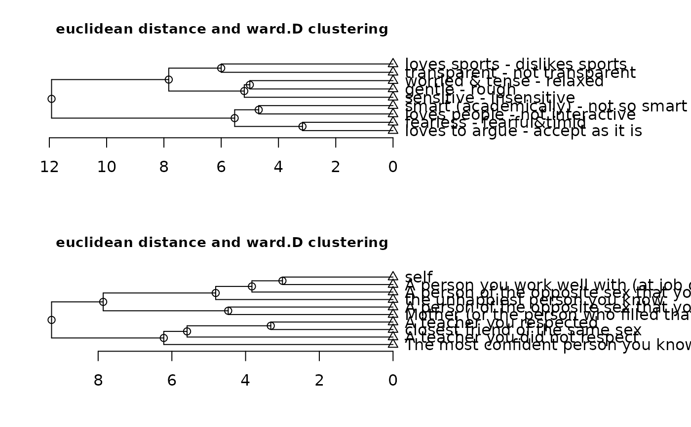
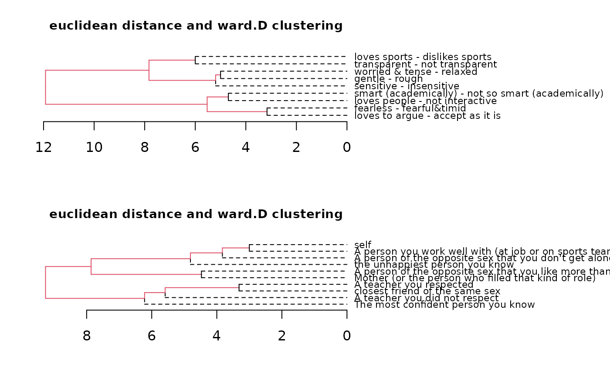

cluster is a preliminary implementation of a cluster function. It supports various distance measures as well as
cluster methods. More is to come.
Usage
cluster(
x,
along = 0,
dmethod = "euclidean",
cmethod = "ward.D",
p = 2,
align = TRUE,
trim = NA,
main = NULL,
mar = c(4, 2, 3, 15),
cex = 0,
lab.cex = 0.8,
cex.main = 0.9,
print = TRUE,
...
)Arguments
- x
repgridobject.- along
Along which dimension to cluster. 1 = constructs only, 2= elements only, 0=both (default).
- dmethod
The distance measure to be used. This must be one of "euclidean", "maximum", "manhattan", "canberra", "binary" or "minkowski". Any unambiguous substring can be given. For additional information on the different types type
?dist.- cmethod
The agglomeration method to be used. This should be (an unambiguous abbreviation of) one of
"ward.D","ward.D2","single","complete","average","mcquitty","median"or"centroid".- p
The power of the Minkowski distance, in case
"minkowski"is used as argument fordmethod.- align
Whether the constructs should be aligned before clustering (default is
TRUE). If not, the grid matrix is clustered as is. See Details section for more information.- trim
the number of characters a construct is trimmed to (default is
10). IfNAno trimming is done. Trimming simply saves space when displaying the output.- main
Title of plot. The default is a name indicating the distance function and cluster method.
- mar
Define the plot region (bottom, left, upper, right).
- cex
Size parameter for the nodes. Usually not needed.
- lab.cex
Size parameter for the constructs on the right side.
- cex.main
Size parameter for the plot title (default is
.9).Logical. Whether to print the dendrogram (default is
TRUE).- ...
Additional parameters to be passed to plotting function from
as.dendrogram. Type?as.dendrogramfor further information. This option is usually not needed, except if special designs are needed.
Details
align: Aligning will reverse constructs if necessary to yield a maximal similarity between constructs. In a first step the constructs are clustered including both directions. In a second step the direction of a construct that yields smaller distances to the adjacent constructs is preserved and used for the final clustering. As a result, every construct is included once but with an orientation that guarantees optimal clustering. This approach is akin to the procedure used in FOCUS (Jankowicz & Thomas, 1982).
References
Jankowicz, D., & Thomas, L. (1982). An Algorithm for the Cluster Analysis of Repertory Grids in Human Resource Development. Personnel Review, 11(4), 15-22. doi:10.1108/eb055464.
Examples
cluster(bell2010)
cluster(bell2010, main = "My cluster analysis") # new title
cluster(bell2010, type = "t") # different drawing style
cluster(bell2010, dmethod = "manhattan") # using manhattan metric
cluster(bell2010, cmethod = "single") # do single linkage clustering
cluster(bell2010, cex = 1, lab.cex = 1) # change appearance

cluster(bell2010, lab.cex = .7, edgePar = list(lty = 1:2, col = 2:1)) # advanced appearance changes
